🌀 Młynek do przypraw/kawy dla Oli — Szwecja
⚡ TL;DR — co kupić
| Pick | Cena | Dlaczego | Kiedy | |
|---|---|---|---|---|
| 🥇 | Bosch TSM6A013B (blade, 180 W) — Amazon.se | 207 kr Prime Clas Ohlson: 329 kr | Najlepszy budżetowy blade: 4,5★ / 25 100 opinii, „bästa budget" w Test.se. Idealny na przyprawy (konsensus r/spices), kawę też zmieli. | Najtaniej i najszybciej — jutro w drzwiach |
| 🥈 | Odbiór dziś bez Prime: Jula Menuett 180 W (199 kr, 4,7★/215) lub Clas Ohlson 150 W (199 kr, 4,5★/230) | 199 kr | Blade klasy Bosch za te same pieniądze, odbiór Rotebro/Infra City — zero czekania na kuriera. | Gdy dziś/wieczorem ma być w kuchni |
| 🥉 | Dla kawy (opcja): KINGrinder P0 (ręczny burr, 4,7★/173) | 333,50 kr Prime | Do przypraw blade, do kawy burr — nie łącz (olejki przypraw zapychają żarna). Razem z Boschem ~540 kr, w budżecie. | Gdy Ola zacznie palić własną kawę |
♻️ Używki na dziś (gdyby wolała tańsze): Rubicson NOWY 75 kr (Saltsjö-Boo) · Bodum Bistro Burr 200 kr (FB MP, nowy ~600) · Skeppshult żeliwo, aukcja od 90 kr (nowy 595, kończy się 8.11).
⚙️ Porównanie featurek — 10 modeli z PDP (v2)
Czym się dobre charakteryzują (kryteria z testów + PDP): moc ≥150 W na twarde przyprawy (cynamon, goździki) · stalowa/wyjmowana miska (higiena po kuminie) · puls zamiast „przycisku on” (kontrola stopnia) · przegrzewanie-ochrona (blade pali aromat) · burr: precyzja stopni ≥15. Ważne: blade „bez regulacji” = grubość sterujesz czasem pulsu — do przypraw (pył) to w praktyce nieograniczenie; regulacja fizyczna ma sens głównie przy kawie (burr).
| Model | Cena | Typ | Regulacja grubości | Moc / pojemność | Materiał misy | Featureki z PDP |
|---|---|---|---|---|---|---|
| 🥇 Bosch TSM6A013B | 207 kr | blade | ❌ brak (czas pulsu) | 180 W / 75 g | plastik | bezpiecznik pokrywy, stalowy nóż, bestseller |
| CASO Coffee & Kitchen Smak | 405 kr | blade | czasem pulsu: „grov → mycket fin” | 200 W / 90 g | pełna stal (obudowa+miska+nóż) | puls przyciśnięciem pokrywy; wprost: pieprz, chia, len, ziarna — najlepszy do przypraw |
| Wancle | 202 kr | blade | czas trzymania przycisku (grov/fint) | 200 W miedziany motor / 60 g | stal | ochrona przed przegrzaniem („nie pali ziarna”), cichy |
| Black+Decker BXCG150E | 252 kr | blade | czas + przezroczysta pokrywa (widzisz stopień!) | 150 W / ~60 g | stal (nóż+miska) | lock pokrywy, antypoślizg, schowek kabla, 4,6★/4 032 |
| Severin KM 3879 | 271 kr | blade | „individuellt justerbar” (czas) | ~150 W / 50 g | plastik | duże przyciski, nawijacz kabla, niemiecka jakość |
| Aigostar Breath | 250 kr | blade | one-touch (czas) | 200 W / 10–15 tys. rpm | BPA-free | do kawy, przypraw, ziół, orzechów; 6 001 opinii |
| Krups 1500813248 | 640 kr | blade | czas | kraftfull, „värmeFri” | stalowa miska, unikalny nóż | 68 129 opinii = dekady niezawodności |
| Jula Menuett | 199 kr | blade | ❌ jeden stopień | 180 W | plastik | najlepsza ocena lokalnych (4,7★) |
| Clas Ohlson 150 W | 199 kr | blade | ❌ jeden stopień | 150 W | plastik | 230 opinii, odbiór Infra City |
| 🥉 KINGrinder P0 | 333,50 kr | burr ręczny | 30 klików/obrót = 0,033 mm — precyzja | 25 g / 330 g wagi | stal SUS420, 5-żarn | demontaż bez narzędzi + szczotka; dla kawy, NIE przypraw |
| MERTTURM USB | 298 kr | burr elektryk | 90 ustawień (ultra-fin → grubo) | bateria 1 800 mAh USB | keramika konus | _enknapp_, avtagbar; ⚠️ tylko 45 opinii (nowość) |
| KINGrinder K2 | 793,50 kr | burr ręczny | wielostopniowa | stal + aluminium, double bearing | stal | espresso-grade, 4,8★ |
Wniosek dla Oli (przyprawy > kawa): jeśli ma być jeden tani sprzęt → Bosch 207 kr (prostota, bestseller, do przypraw pulsujesz na pył) albo dopłać 45 kr do CASO Smak (405 kr) = pełna stal + największa miska 90 g i kultura pracy — najmniej roboty przy czyszczeniu po kuminie. Jeśli przezroczysta pokrywa (kontrola na oko) się podoba → B+D 252 kr. Fizyczna regulacja grubości (90 stopni!) tylko w burrach: MERTTURM 298 (ryzyko: mało opinii) albo Kingrinder P0 333,50 (pewniak, ale ręczny i wolny — kawa, nie przyprawy).
📦 Amazon.se — TOP (wszystkie Prime-eligible)
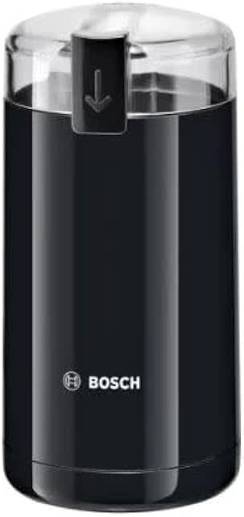
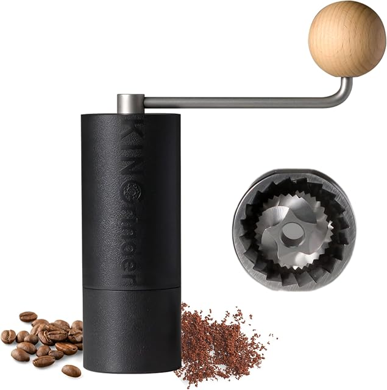
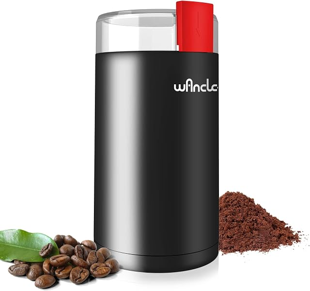
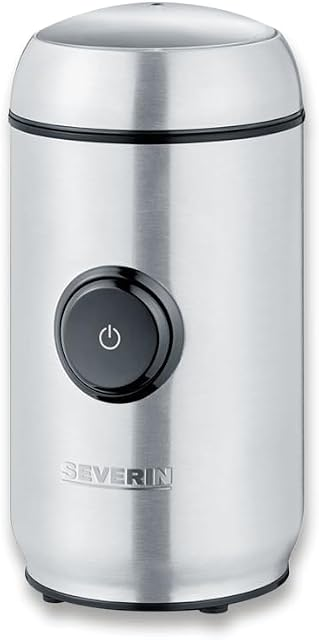
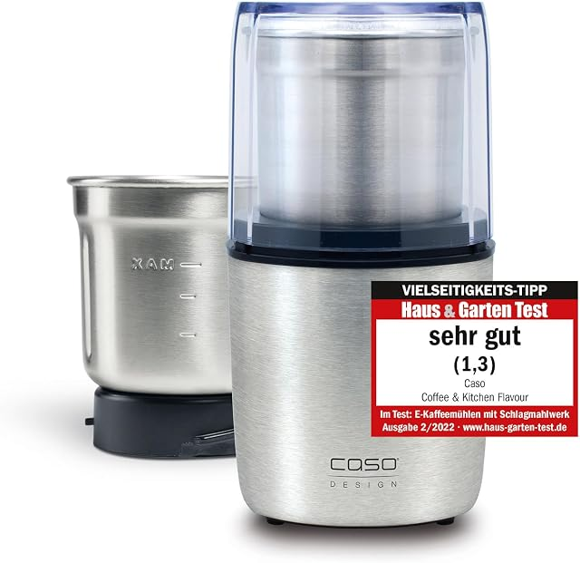
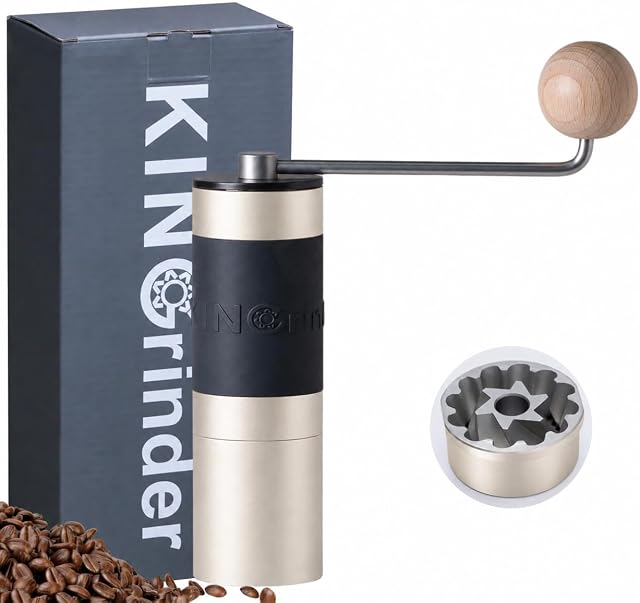
Pozostałe sensowne na Amazonie (≤800 kr, Prime):
| Produkt | Cena | Ocena | Uwagi |
|---|---|---|---|
| Aigostar Breath One-Touch | 250 kr | ★ 4,3 (6 001) | Klasyk budżetowy blade |
| Black+Decker BXCG150E | 252 kr | ★ 4,6 (4 032) | 150 W, dobra do twardych przypraw |
| Krups 1500813248 | 640 kr | ★ 4,4 (68 129!) | Legenda blade, dekady na rynku |
| MERTTURM USB burr | 298 kr | ★ 4,4 (45) | Keramiczny konus — tani burr, mało opinii |
| Retoo elektrisk | 167 kr | ★ 4,2 (322) | Najtańszy sensowny blade Prime |
| SILBERTHAL manuell burr | 678 kr | ★ 4,5 (2 697) | Manual do kawy, stal |
| Bialetti manuell | 469 kr | ★ 4,1 (237) | Znana marka, młynek do kawy |
| CASO Barista Crema | 497 kr | ★ 4,0 (472) | Elektryczny burr „testvinnare" — jedyny burr-elektryk w budżecie |
🏬 Lokalne sklepy SE (odbiór dziś/jutro)
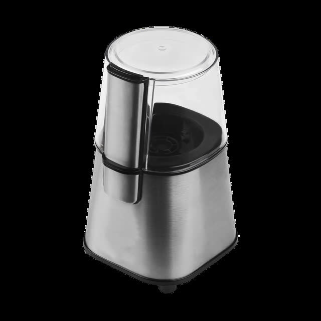
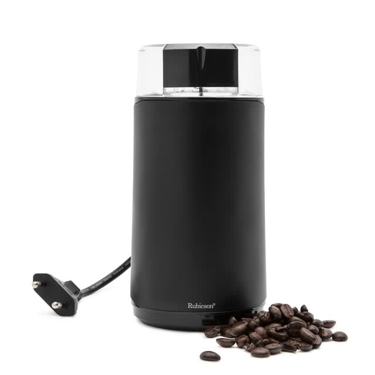
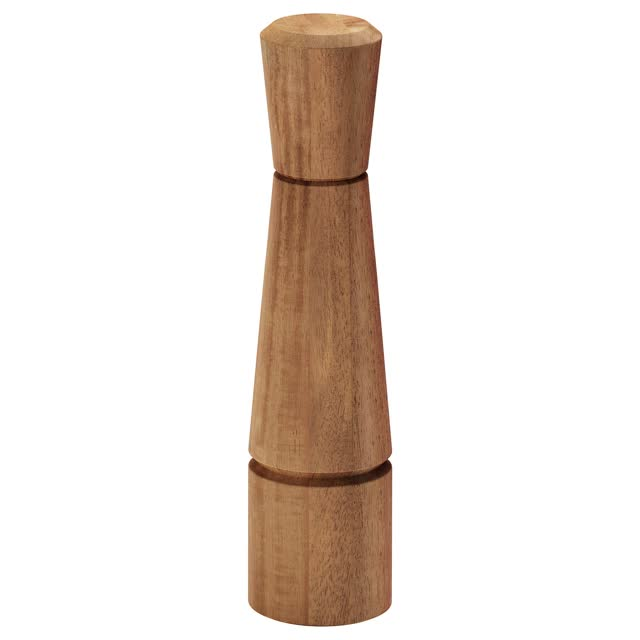

Pozostałe lokalne (wybór):
| Sklep | Co mają | Cena | Link |
|---|---|---|---|
| Clas Ohlson | Bosch TSM6A013B (ten sam co 🥇, ale drożej!) · CO manuell burr · Wilfa Zense | 329 / 479 / 1 399 | szukaj |
| Elgiganten (33 szt. ≤800 kr) | Melitta Amigo 449 · Russell Hobbs 509 · Wilfa Daily 749 · Adler 180– | 180–800 | szukaj |
| Cervera (51 młynków) | EMERIO 259 · Cuisinart DCG20 399 · RIG-TIG 399–599 · Bodum C-Mill 509 · FinaMill 799 | 259–799 | szukaj |
| Teknikmagasinet | 2× elektryczne sol/pastorkvarn (LED, USB) | 249 / 349 | szukaj |
| Granit | tylko kryddkvarn ADD:WISE (4 warianty) | 129–159 | szukaj |
| IKEA | 0 młynków do kawy (potwierdzone API); 4 kryddkvarn 59–149 | 59–149 | szukaj |
| Rusta / Åhléns | 0 / 0 — brak asortymentu | — | — |
♻️ Rynek używany (Blocket / FB Marketplace / Tradera)
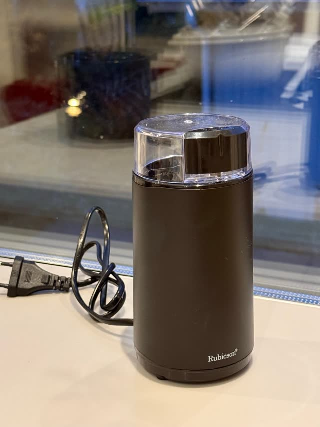
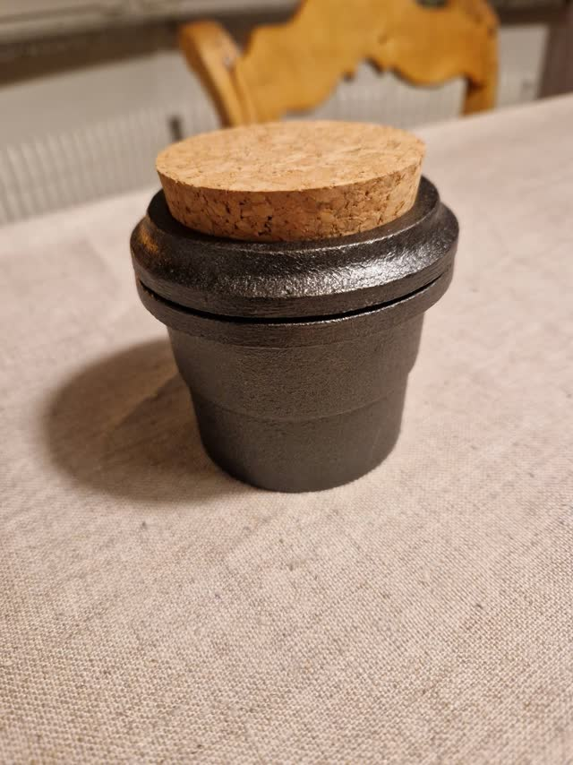
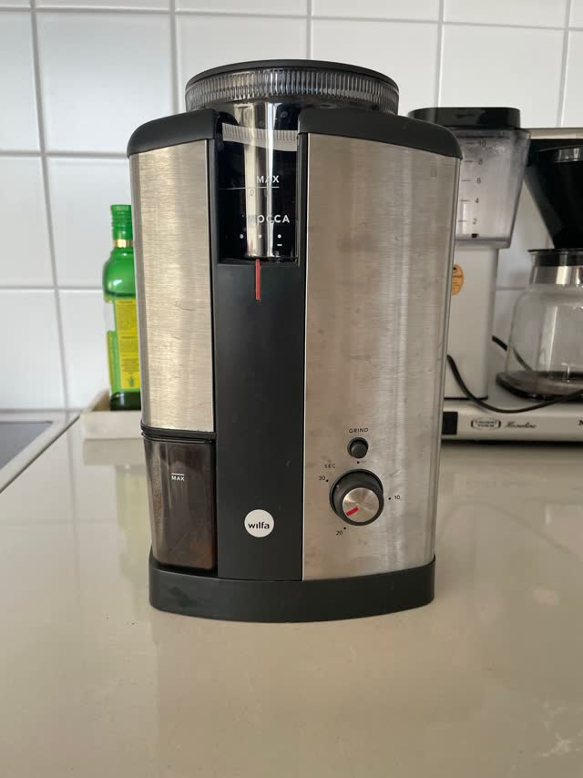
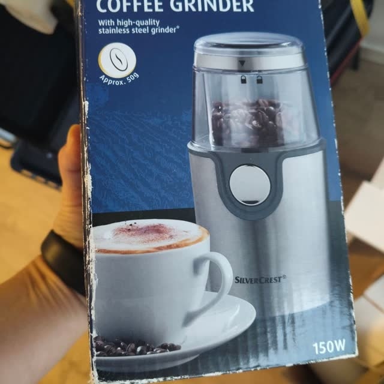
Więcej używek (bez zdjęć w destylacie): Bodum Bistro Burr 200 kr (Norrtuna) · Baratza Encore + 2×Hario 800 kr (Vasastan, nowy ~2 000 — dla kawoszy) · Preethi/Butterfly masala 100 kr (Solna — indyjski młynek stricte do przypraw) · 2× Rubicson elektryczne 110 kr (Tradera).
🧠 Co mówią testy i doświadczenia (13 źródeł, EN+SV)
- Do przypraw = tani blade, nie burr. Konsensus r/spices (~80 komentarzy): „inexpensive blade coffee grinders are ideal for this". Burr zapycha się olejkami i jest trudniejszy w czyszczeniu. główne użycie
- Bosch TSM6A013B = „bästa budget" w Test.se (szwedzki test). „Bäst i test" ogólnie: Melitta Molino (burr, 17 stopni) — ale 899 kr, poza budżetem.
- Strategia dwóch młynków — osobno przyprawy (blade) i kawa (burr): standard w r/spices (kumin w kawie = nie). U was kawę mieli Magnifica S → wystarczy sam blade na przyprawy, burr dopiero jak Ola zacznie parzyć własną.
- Manualne burr do kawy: KINGrinder P0/K2 i Timemore C2 to najczęściej polecane budżetówki (Coffee Chronicler, r/espresso). Do przypraw wolne — Blade wygrywa.
- Eksploatacja: mieli krótkimi pulsami (blade grzeje ziarno — Wikipedia); do twardych przypraw szczypta soli; czyszczenie po kuminie: „wypalić" ryżem/solą; wyjmowana miska = łatwe mycie (CASO Smak ma pełną stalową).
- Unikaj: najtańszych no-name (zapach plastiku), burra do oleistych przypraw (sumak, świeżo prażone — klei się).
💰 Koszty ukryte / logistyka
- Amazon Prime: 207 kr = cena końcowa przy Prime (Bosch sprzedawany przez Amazon). Bez Prime frakt od ~39 kr.
- Jula / Clas Ohlson: odbiór w sklepie 0 kr (Jula InStock online ≠ gwarancja półki — sprawdzić lagersaldo per butik przy rezerwacji). Clas Ohlson Infra City = 15 min od Väsby.
- Używki: Blocket/FB = płatność Swish na miejscu (Rubicson Saltsjö-Boo ~20 min autem); Tradera = frakt ~49–79 kr przy wysyłce.
- Stainless steel misa (CASO 405) = mniej wchłania zapachów niż plastikowa — jeśli przyprawy będą częste, warta dopłaty.
🗺️ Coverage — 16 źródeł
| Źródło | Status | Metoda / rungi | Wynik |
|---|---|---|---|
| Amazon.se | ✅ COVERED | curl SSR ×4 query + agent PDP ×20 (lightpanda: „oväntat fel" → eskalacja curl) | 230 raw → 99 ≤800 kr → 59 Prime |
| Clas Ohlson | ✅ COVERED | hidden API (Googlebot-UA) + PDP curl + lightpanda og:image (3 rungi; CDN blokuje miniatury) | 7 kaffekvarn + 5 kryddkvarn |
| Jula | ✅ COVERED | Lightpanda CDP + JSON-LD PDP | 1 kaffekvarn + 5 kryddkvarn |
| Rusta | ✅ COVERED | SSR (window.CURRENT_PAGE) | 0 / 0 (dowód URL w destylacie) |
| IKEA | ✅ COVERED | API search | 0 kaffekvarn, 4 kryddkvarn |
| Elgiganten | ✅ COVERED | API + stealth Chromium (og:image ✗ — Vercel checkpoint) | 33 młynki ≤800 kr |
| Åhléns | ✅ COVERED | SSR search | 0 / 0 |
| Cervera | ✅ COVERED | Apptus eSales v3 API (reverse-eng.) | 51 kaffekvarn + 67 kryddkvarn |
| Kjell & Company | ✅ COVERED | ld+json PDP | Rubicson kaffe+krydd 199,90 |
| Granit | ✅ COVERED | Magento SSR | 0 kaffekvarn; 4 kryddkvarn |
| Teknikmagasinet | ✅ COVERED | sitemap + ld+json | 0 kaffekvarn; 2 kryddkvarn |
| Kitch'n (kitchn.se) | ❌ FAILED | curl + DNS — domena NXDOMAIN (nie istnieje w SE) | — |
| Blocket | ✅ COVERED | własny skrypt SSR (blocket_search.py) | ~35 trafień + detale |
| FB Marketplace | ✅ COVERED | GraphQL API (fb_mp_search.mjs) | 49 trafień („kryddkvarn" = 0 wyników) |
| Tradera | ✅ COVERED | RSC SSR (tradera_search.py) | 249 wyników, 4 frazy + detale |
| Testy/wiedza | ✅ COVERED | 13 źródeł: Test.se, Råd & Rön, Testfakta, Reddit (arctic-shift), Wikipedia, Coffee Chronicler, TechGearLab… | 8 wniosków zakupowych |